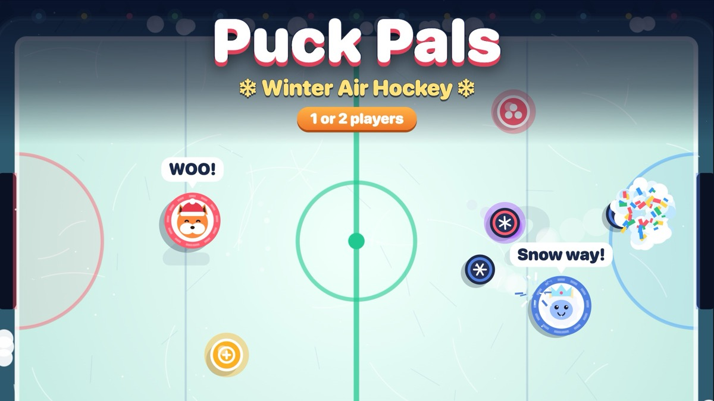

Puck Pals: cozy winter air hockey for one or two players

Puck Pals is our entry for the Playgama Player Two Found challenge: a game for a cold evening with a friend. It is air hockey on a frozen-pond table strung with fairy lights, with mitten-paddles shaped like cute animals.
Chaos on the ice
Power-ups drop onto the table during play: triple puck, giant paddle, a snow wall in front of your goal, slippery ice, a mini goal for your opponent and a magnet puck. Every goal blows up in snow and confetti, and match point goes into slow motion.
Alone or together
- Solo: climb the Winter Cup through 10 rivals, from Pip the rookie penguin to Big Yuki the champion yeti. Each rival plays differently, and beating them unlocks new pals and tables.
- Two players: press 2 PLAYERS and play head-to-head on one device, with a running series score and an optional handicap. On a phone, each player drags in their own half of the screen.
Controls
Phone: drag in your half. Desktop: player 1 uses the mouse or WASD, player 2 the arrow keys. P pauses, M mutes.
Play it free in your browser →Made by Holiday Play Studio, a small indie studio. We design our games with the help of AI coding tools (Claude Code), then play-test and polish them by hand. The games are free to play in your browser.